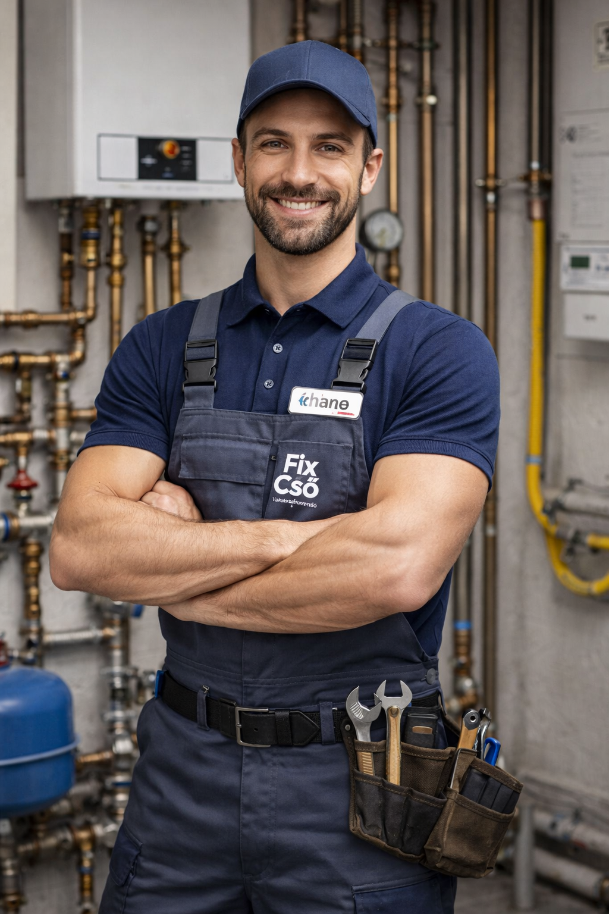

Tudom, milyen érzés egy idegent beengedni az otthonába, főleg, ha váratlan baj van a vízzel vagy a gázzal. Lakatos Armandó vagyok, a FixCső Épületgépészet alapítója. Több mint 15 év tereptapasztalattal, mestervizsgával és arcképes gázszerelői igazolvánnyal a zsebemben pontosan tudom, mit várnak el tőlem a megrendelők. Nálam nincs találgatás vagy felesleges falbontás, mert modern diagnosztikai műszerekkel, például hőkamerával dolgozom, így tényleg csak ott nyúlok a rendszerhez, ahol muszáj. Számomra a szakértelem nemcsak a hibátlanul megszerelt csöveket jelenti, hanem azt is, hogy tiszteletben tartom az otthonodat: a cipővédő lábzsák használata és a munka utáni takarítás nálam nem feláras extra, hanem az alapvető minimum. Nincsenek mellébeszélések és rejtett költségek sem; érthetően elmagyarázom a problémát, a felmérés után pedig fix árat adok, hogy pontosan tudd, mire számíthatsz. Ha megbízható, tiszta és szakszerű megoldásra van szükséged, hívj bizalommal!
Maximálisan elégedett vagyok! FixCső pontosan érkezett a csőtörés elhárítására. Gyorsan és tisztán dolgoztak, a munka végeztével mindent feltakarítottak maguk után. Az ár korrekt volt, és pontosan annyit fizettem, amennyit az elején megbeszéltünk. Mindenkinek ajánlom őket, aki megbízható szakembert keres!
5/5 csillag
2035.13.40 13:13
Őszintén szólva, tartottam tőle, hogy napokig szakember nélkül maradunk a csőtörés után, de a FixCső csapata minden várakozásomat felülmúlta. Már az első telefonhívásnál érezhető volt a profizmus: pontos tájékoztatást kaptam a várható költségekről és az érkezés időpontjáról is. Ritka manapság az olyan szerelő, aki nemcsak érkezik a megbeszélt időre, de láthatóan ad a tisztaságra és a precizitásra is – nálunk még lábzsákot is használtak, hogy ne hordják szét a sarat a lakásban. A hibát gyorsan és magabiztosan hárították el, modern eszközökkel dolgoztak, és a munka végeztével sem hagytak maguk után felfordulást. Jó érzés tudni, hogy van még olyan cég, ahol a szakértelem tisztességes árazással és emberséges hozzáállással párosul. Bátran ajánlom őket bárkinek, aki nem akar kockáztatni, ha víz- vagy gázszerelésről van szó!
5/5 csillag
1925.03.27 22:05
A FixCső szakemberei végezték nálunk a gázkazán éves karbantartását és egy kisebb radiátorjavítást. Magával a munka minőségével nincs problémám, a szerelő felkészült volt, és láthatóan értett a dolgához, a hiba megszűnt. Sajnos a szervezés és a kommunikáció terén voltak hiányosságok. A megbeszélt reggeli időpont helyett csak kora délután érkeztek meg, és erről külön nem kaptam tájékoztatást, nekem kellett utánatelefonálnom, hogy jönnek-e még egyáltalán. Emellett a munka végén a törmeléket és a csomagolást is nekem kellett eltakarítanom, amit egy ilyen kaliberű cégtől elvártam volna, hogy megoldják. Összességében a szakértelem megvan, de a pontosságon és az ügyfélkezelésen még lenne mit csiszolni.
3/5 csillag
2023.10.15 14:30